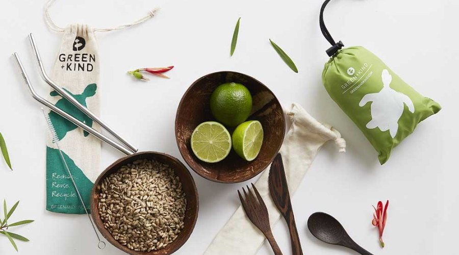
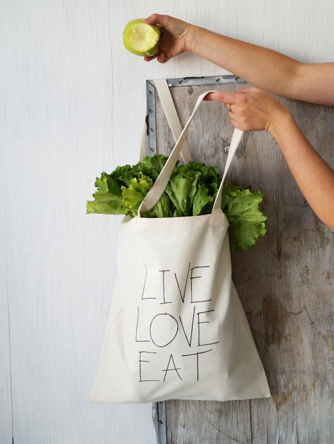
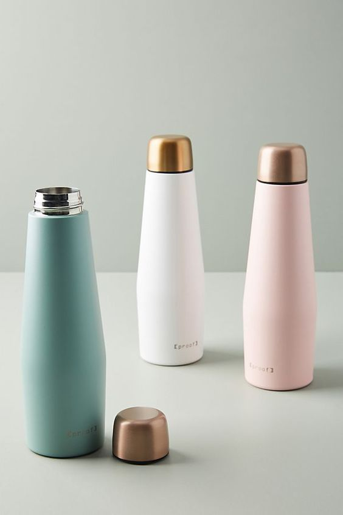

відповідальне споживання
Тема екологічного способу життя сьогодні є важливою складовою нашого майбутнього. Це повинно стати не просто екологічним способом життя, а екологічним способом мислення. Люди звикли не замислюватися про багато речей, які ми маємо або отримуємо щодня. Суспільство людей - це суспільство споживачів, а такий шлях рано чи пізно призведе до руйнування всього живого на цій планеті. Те, що ми можемо зробити вже сьогодні не залежить від того місця, де ми живемо і як ми живемо. Буквально кожну нашу дію можна повернути в бік екологічності, при цьому, не ущемляючи себе в зручності та комфорті.
Так як же все-таки зробити своє життя більш екологічним?
1. «Зелене» споживання
Вибирайте те, що від стадії сировини/виготовлення до розпаду/переробки завдає мінімальної шкоди землі і людському організму. Купуйте в магазинах безпечні миючі засоби (які містять фосфатів, хлору, А-ПАР менше 5%), шукайте здорові продукти без Е і барвників-консервантів, з еко маркуванням.
2. Замініть одноразові предмети на багаторазові
- Багаторазова сумка для покупок
- Багаторазові пляшки для води
- Практикуйте роздільний збір сміття
- Не викидайте батарейки, лампочки і градусники
Замість того, щоб кожен раз в магазині купувати новий пакет, постарайтеся постійно носити в сумці або возити в машині звичайну багаторазову господарську сумку. Це дійсно здатне знизити виробництво пластика.
Замість того, щоб кожен день купувати воду в пластиковій пляшці, можна придбати багаторазову ємність, яка призначена для рідини. Навіть якщо ви придбали воду в пластиці, не слід відразу викидати порожню пляшку, її можна використовувати ще кілька разів, попередньо помивши її.
Це не так складно, як здається насправді. Вам знадобиться всього 3-4 великих пакета або коробки, куди ви будете сортувати сміття, який не підлягає природної переробки. І раз на два-три тижні можна відвозити або відносити їх до спеціального прийомного пункту вторинної переробки сміття або в баки для збору роздільного сміття, якщо такі є в вашому районі.
Ці предмети не можна викидати разом зі сміттям, так як шкідливі речовини, що містяться в батарейках, ртутних градусниках і лампочках, можуть потрапити в грунт і грунтові води. Тому їх необхідно утилізувати окремо від основного сміття і здавати в спеціальні пункти прийому для цього виду відходів.
3. Замініть звичайні лампочки на світлодіодні
Світлодіодні лампи споживають значно менше електроенергії, ніж інші. Вони економічніше ламп розжарювання в 10 разів. Термін служби світлодіодів складає 30-50 тисяч годин. На відміну від інших видів ламп, LED-лампи не створюють інфрачервоного і ультрафіолетового випромінювання. Крім того, лампи не містять ртуті і не вимагають особливої утилізації.
4. Економте електроенергію і воду
Вимикайте на ніч комп'ютер, так як він споживає електроенергію в сплячому режимі. Вимикайте від розетки прилади, якими ви не користуєтеся довгий час. Так як, такі прилади як телевізор так само споживають електрику, навіть коли вони не включені.